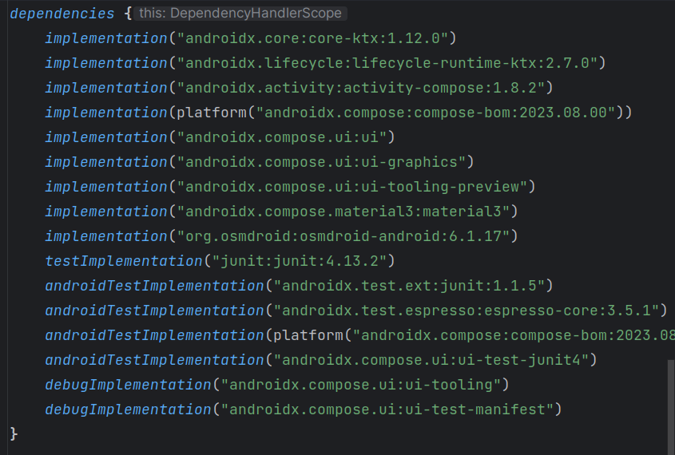

As you have seen in Weeks 2 and 3, Jetpack Compose is recommended as the contemporary standard in UI development. However you may still be exposed to the older approach to developing UIs using XML layouts and Views, so we will look at it here. In particular, you may find yourself working with other people's code, or third-party libraries, which uses this approach. Due to its use of Views (to be discussed below), this approach is know as the Views approach to UI development.
The View is the single most important concept in Views UI development. A View represents a visible component on the screen, such as a button, a text field or a label. View is an Android API class and all Views UI components are sub-classes of View, for example a Views Button (different to the Compose Button) is a subclass of View.
Every Views Activity contains a View which is the "main component" of the screen, referred to as the content view. This is normally, but not always, a parent View which contains a series of other Views. In the example below, it's the simplest type of View: a TextView. A TextView is what it sounds like: a View which can contain text. So here, we create a TextView containing the text "Hello world" and make it the content view of our Activity.
package com.example.myapp
import androidx.appcompat.app.AppCompatActivity
import android.os.Bundle
import android.widget.TextView
class MainActivity : AppCompatActivity() {
override fun onCreate(savedInstanceState: Bundle?) {
super.onCreate(savedInstanceState)
val tv = TextView(this)
tv.setText("Hello World!")
setContentView(tv)
}
}
In Views development, we frequently we add components to the main screen programatically, as seen above. However we can cut down on the amount of setup code using XML layouts instead. With XML layouts, we define the layout of the content view of the Activity using XML tags. XML (eXtensible Markup Language) is a tag-based format for representing data, related to HTML.
Here is an example of an XML based layout:
<LinearLayout xmlns:android="http://schemas.android.com/apk/res/android"
android:orientation="vertical"
android:layout_width="match_parent"
android:layout_height="match_parent">
<TextView android:layout_width="wrap_content"
android:layout_height="wrap_content" android:text="@string/hello" />
</LinearLayout>
LinearLayout defines the view's layout. The layout specifies how the various components are arranged with respect to each other. LinearLayout indicated that components are placed adjacent to each other, either vertically or horizontally (depending on the android:orientation attribute)android:layout_width and android:layout_height attributes of the TextView describe how it fills its parent layout in the horizontal and vertical directions. The most common values are match_parent and wrap_content. The former, as used here, means that the TextView entirely fills its parent (the LinearLayout), the result being that the TextView fills the entire screen. The latter,wrap_content, means that enough space to contain the content (the text "Hello World" here) should be used. android:text attribute specifies the text within the TextView. Note however how we don't give it a straight value, we use @string/hello, which will represent an entry with a name of hello in the strings.xml file.
layout resources folder. If you create a Views Activity when choosing the project type in Android Studio, it will create a layout file, activity_main.xml, for you.
As for other types of resource you access this through the auto-generated R class. So assuming the XML layout is in activity_main.xml, you can set the XML layout as the main content view of your activity with:
setContentView(R.layout.activity_main)The complete code would be as follows:
package com.example.myapp
import androidx.appcompat.app.AppCompatActivity
import android.os.Bundle
class MainActivity : AppCompatActivity() {
override fun onCreate(savedInstanceState: Bundle?) {
super.onCreate(savedInstanceState)
setContentView(R.layout.activity_main)
}
}
Here is an example of how events are handled in Views activities. It's the feet-to-metres exercise, but re-written for Views. Firstly, the XML layout:
<LinearLayout xmlns:android="http://schemas.android.com/apk/res/android"
android:orientation="vertical"
android:layout_width="match_parent"
android:layout_height="match_parent">
<EditText
android:layout_width="match_parent"
android:layout_height="wrap_content"
android:inputType="numberDecimal"
android:id="@+id/et1" />
<Button
android:layout_width="wrap_content"
android:layout_height="wrap_content"
android:id="@+id/btn1"
android:text="@string/convertBtn" />
<TextView
android:layout_width="match_parent"
android:layout_height="wrap_content"
android:id="@+id/tv1"/>
</LinearLayout>
Note how this linear layout consists of an EditText (equivalent to a TextField in Compose), a Button and a TextView. Because the orientation of the LinearLayout is vertical, the elements will be stacked on top of each other (like a Column in Compose).
Note also how each element has an ID. This allows us to access it from within Kotlin, rather like how we can access HTML elements from JavaScript using their ID.
Here is the Kotlin code to interact with the elements in the layout. When the Button is pressed, it reads the feet from the EditText as a string, converts it to a double, converts it to metres and place the metres in the TextView.
import androidx.appcompat.app.AppCompatActivity
import android.os.Bundle
import android.widget.Button
import android.view.View.OnClickListener
import android.view.View
import android.widget.TextView
import android.widget.EditText
class MainActivity : AppCompatActivity () {
override fun onCreate(savedInstanceState: Bundle?) {
super.onCreate(savedInstanceState)
setContentView(R.layout.activity_main)
val b = findViewById<Button>(R.id.btn1)
b.setOnClickListener {
val et1 = findViewById<EditText>(R.id.et1)
val feet = et1.text.toString().toDouble()
val metres = feet*0.305
val tv1 = findViewById<TextView>(R.id.tv1)
tv1.text = "In metres that is: $metres"
}
}
}
First of all note how we access the user interface components from Kotlin. We use code such as:
val b = findViewById<Button>(R.id.btn1)Note how the
findViewById() method takes in an ID and returns the corresponding component. The ID matches the IDs that we specified in the XML file; for instance, our button was given an ID of btn1 so we reference it in code with R.id.btn1.
To handle events such as button clicks, we specify an event listener function, which is typically a lambda. For a button, the event listener is specified with setOnClickListener():
b.setOnClickListener {
val et1 = findViewById<EditText>(R.id.et1)
val feet = et1.text.toString().toDouble()
val metres = feet*0.305
val tv1 = findViewById<TextView>(R.id.tv1)
tv1.text = "In metres that is: $metres"
}
When the button is clicked, the specified lambda function will run, and
as you can see, the lambda first obtains the edit text
element, and then reads the feet from it with
val feet = et1.text.toString().toDouble()Note that the
.text property of the edit text returns an object of type Editable. We then need to call toString() on the Editable to get the actual text out of the text field, and finally convert it to a Double using toDouble().
Then we convert the feet to metres and place the result in the TextView.
Because Jetpack Compose is quite a recent development, there are many third-party libraries which use Views rather than Compose. You may want to use these libraries while still using Compose for your UI. You can do this with the AndroidView composable. AndroidView is used to make a composable from an existing View. We will look at the use of AndroidView a little later, but first we will take a look at mapping in Android apps. The mapping library that we are looking at makes use of Views, so it provides a perfect example of how to integrate Views-based libraries into a Compose application.
Android projects use the build tool Gradle to build an executable Android app from your source code and resources. Gradle is rather like Maven, which most of you have met in OODD. Gradle uses a build file build.gradle.kts to tell it how to build the project. We are now going to take a first look at the app's build.gradle.kts file and examine how to include third-party dependencies (i.e. libraries).
Many Android apps depend on third-party libraries written by independent developers. Many of these are FOSS (free and open-source software) meaning, amongst other things, you can use them freely in your own projects. Dependencies are added to the build.gradle.kts file.
You should link third-party dependencies to your app via the dependencies section of the build.gradle.kts file. build.gradle.kts is a build file: a set of instructions used by Gradle to create your app from your code and any third-party libraries it may require. Gradle is a standalone tool (can be used outside Android Studio, so you can build your apps with Gradle and without Studio if you wish), but is included within Android Studio.
Note there are two build.gradle.kts files, one for the whole project and one for your app specifically. It is the latter (the app build.gradle; the second one as seen in Android Studio) that you need to edit in most cases. The dependencies section of an app build.gradle.kts is shown below.

To use mapping, we need to include a third-party mapping library, specifically osmdroid.
We are going to add the osmdroid mapping library to our app as an example of a dependency. This will allow us to add a map to our main activity. It can be added to the dependencies section of the app's build.gradle.kts as an additional dependency:
implementation ("org.osmdroid:osmdroid-android:6.1.17")
Where is the osmdroid library coming from? If you have used a build system
such as Maven in standard Java, you might recognise the technique used. It
downloads the osmdroid library from an online repository of Java
libraries. There are two repositories used: Google's own, and Maven Central, the standard one Maven also uses. Additional repositories can be specified in the settings.gradle.kts file.
Once the dependency has been downloaded, it will be saved on your computer so that it will not need to be downloaded next time you open the project.
Most location-based apps include a map as the content view of their main activity. Android comes with inbuilt map functionality via Google Maps; however to use Google Maps you need to obtain an API key and it comes with some restrictions so we are going to use an alternative mapping library: osmdroid, available here. (A library is a collection of Java classes with related functionality, such as mapping). As a Java library, you can use it in a Kotlin app.
osmdroid is a third-party open source library which uses maps from the OpenStreetMap project. OpenStreetMap is a global project to provide free and open mapping data which anyone can contribute to; see the website for more details. In using osmdroid, you will also see how to add external libraries to an Android project.
In order to understand location-based applications, it is important to understand the coordinate system used on the earth. The most common coordinate system uses latitude and longitude. Latitude is a measure of how far north or south you are: the equator is at 0 degrees, while the North Pole is at 90 degrees North, we are at about 50 and Spain is at about 40. Longitude is a measure of how far east or west you are: 0 degrees of longitude is referred to as the Prime Meridian (or Greenwich Meridian) and passes through Greenwich, London. By contrast Germany is located between approximately 7 degrees and 15 degrees East, while New York is at 74 degrees West and the west coast of North America at approximately 120 degrees West.
So a given point on the earth can be defined via its latitude and longitude. The university is at approximately, 50.9 North (latitude) and 1.4 West (longitude). By convention, latitudes north of the equator and longitudes east of Greenwich are treated as positive, so we can also define our position as longitude -1.4, latitude +50.9.
Here is a sample app using the osmdroid Android API using Views.
package com.example.mapping
import androidx.appcompat.app.AppCompatActivity
import android.os.Bundle
import android.preference.PreferenceManager
import org.osmdroid.config.Configuration
import org.osmdroid.tileprovider.tilesource.TileSourceFactory
import org.osmdroid.util.GeoPoint
import org.osmdroid.views.MapView
class MainActivity : AppCompatActivity() {
override fun onCreate(savedInstanceState: Bundle?) {
super.onCreate(savedInstanceState)
// This line sets the user agent, a requirement to download OSM maps
Configuration.getInstance().load(this, PreferenceManager.getDefaultSharedPreferences(this));
val map1 = MapView(this)
map1.controller.setCenter(GeoPoint(51.05, -0.72))
map1.controller.setZoom(14.0)
map1.setClickable(true)
map1.setTileSource(TileSourceFactory.MAPNIK)
setContentView(map1)
}
}
Note how this is working:
MapView object. This is a View representing the map.apply()Note how we repeatedly refer to the map1 object when calling the methods to set the map properties. This arguably makes the code a little repetitive. We can avoid this with a apply() call. apply() allows us to define a lambda, inside which this refers to a particular object. So we could use, in this case, this.setCenter(), this.setZoom() etc. However, because this is optional when calling methods, we could simply use setCenter() and setZoom(). Here is an example of the code above rewritten to use apply():
val map1 = MapView(this)
map1.apply {
controller.setCenter(GeoPoint(51.05, -0.72))
controller.setZoom(14.0)
setClickable(true)
setTileSource(TileSourceFactory.MAPNIK)
}
setContentView(map1)
Note how map1 is the subject of the apply() call. So inside the apply() lambda, this refers to the map1 object. But, as said above, we can omit this and write the method calls without any object.
Mapping apps need to obtain the map tiles from the internet. To do this, we need to add the internet permission. The manifest file is an XML file describing the app and its components (e.g. the activities making up the app), as well as the app permissions (see below). It is called AndroidManifest.xml and can be found in the manifests directory.
Apps need to be granted permissions to perform sensitive operations. Sensitive operations can include:
We will look at permissions in more detail next time. For now, we just need to add one permission to the manifest file:
<uses-permission android:name="android.permission.INTERNET" />
Having now looked at mapping, we can create a Composable to contain an osmdroid map as an example of using Views in Compose. How do we do this in general?
We make use of the AndroidView composable. This is a composable designed precisely for the purpose of including Views inside a Compose layout. When creating an AndroidView you should specify two parameters:
factory. This is a function which should create and return the View you wish to include in the Compose layout, such as a MapView.update function. This code is called whenever the composable is re-rendered, for example because state changes. In here you would set any properties of the View that might need to change.MapComposable which is a composable wrapping a MapView:
@Composable
fun MapComposable(geoPoint: GeoPoint) {
AndroidView(
factory = { ctx ->
// This line sets the user agent, a requirement to download OSM maps
Configuration.getInstance()
.load(ctx, PreferenceManager.getDefaultSharedPreferences(ctx))
MapView(ctx).apply {
setClickable(true)
setMultiTouchControls(true)
setTileSource(TileSourceFactory.MAPNIK)
controller.setZoom(14.0)
}
},
update = { view ->
view.controller.setCenter(geoPoint)
}
)
}
This might be used from our main layout as follows. Note how we are storing the current latitude and longitude (a GeoPoint) in state:
setContent {
MappingComposeTheme {
Surface {
var geoPoint: GeoPoint by remember { mutableStateOf(GeoPoint(51.05, -0.72)) }
MapComposable(geoPoint)
}
}
}
Note how the MapComposable contains an AndroidView. To explore the AndroidView in more detail:
factory, a lambda, is run when the layout is first created. It takes one parameter ctx. This is a Context, a standard Android class which represents primary application components such as Activities. Here, the context ctx will represent the activity, but it can represent other components in some situations. The context is typically needed for creating the View: note how we pass it into the MapView in this case.apply() to set its properties. However we do not store it in a variable as we automatically obtain a reference to it in the update method (see below).MapView is the final statement in the lambda, so the MapView will be returned from the factory in this case. This is what we must do: we must return the View from the factory function.update parameter. This is also a function: this function runs each time a composable is re-rendered, for example the state changes. In here, you make changes to the underlying View which may need to be made if the state changes. The update function takes the View that we returned from the factory as a parameter (view in the example), so here the parameter will represent the MapView. In this example, we might store the current latitude and longitude in state, in a GeoPoint object. This object is passed into our MapComposable from state, so will change when the state changes.Before attempting these exercises, ensure that you complete Exercise 1 and the lists exercise from last week. You do not, however, have to complete the advanced (messaging) exercise.
EditText, Button and TextView. The EditText should allow the user to enter their name. When the user clicks the button, the TextView should greet the user by name by displaying "Hello" plus the name entered in the EditText. Use the feet to metres Views examples, above, for guidance.AndroidView, create a working Compose application showing an osmdroid map. Position it to latitude 50.9, longitude -1.4.TextFields. Create a Compose layout with:

GeoPoint - part of osmdroid).GeoPoint should be updated appropriately.GeoPoint changes.Box composable in Topic 5 and try altering the layout so that the row containing the text fields and buttons is at the bottom of the screen. The intended layout is as follows: